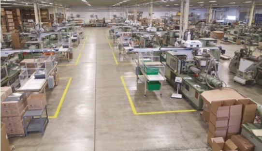
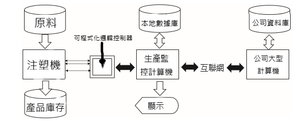
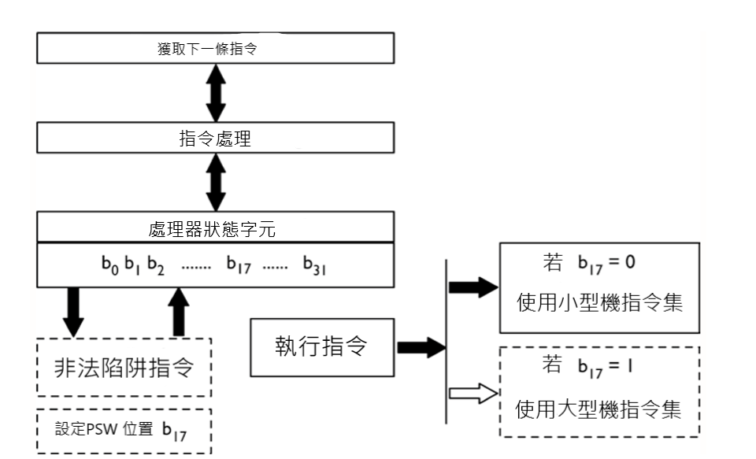
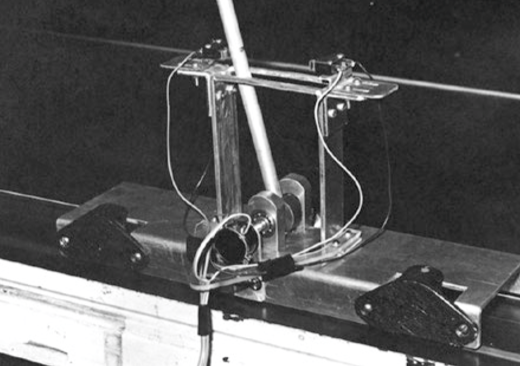
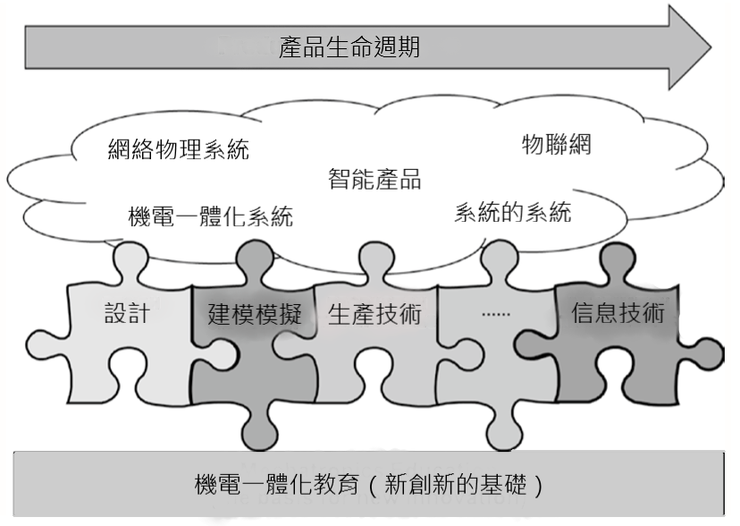

week10~15 <<
Previous Next >> 第四次直播開會
第三次開會紀錄+翻譯
影片 :
工作分配
Coppeliasim :
40723210
207頁PDF :
40723232 P.1~20
40723234 P.21~50
40723204 P.51~80
40723225 P.81~110
40623115 P.111~140
40623251 P0141~170
40723245 P.171~207
20頁PDF :
40723250 P.1~20
46頁PDF :
40723238 P.1~46
38頁PDF :
40723212 P.1~38
翻譯
翻譯網址https://drive.google.com/file/d/1AFADmyNrwprE7AesaFAecZZquIfzbLw-/view
第15章 機電一體化教育：滿足未來的需求
15.1簡介
在員工大會，會議和博客中熱烈討論的所有主題中，未來的教育效率和相關性似乎總是在增長。教授們回想起自己的教育經歷和為在學術界取得當前地位而奮鬥的過程，這是因為目前缺乏數學知識，缺乏學生才能以及從硬設計轉變為即插即用心態的轉變。軟件即服務（SaaS），雲計算以及平台即服務（PaaS）和機電一體化系統之間存在明顯的脫節。
雖然從構成物聯網（IoT）的計算單元內部進行抽象可能會加快產品的發布速度，但在實際應用領域中工作的機電工程師卻正在考慮軟件及其源代碼的完整性，可靠性。實際環境中的時間，如何管理組件升級以及故障後的系統恢復。本章包括作者經驗中的真實經歷，災難，挑戰和討論主題，以突出強調機電工程師必須了解的知識並說明創新和技術靈活性的必要性。選擇本章的每個小節都是為了突出技術和非技術主題，這些主題應該成為機電一體化教育不可或缺的一部分。
在2014年6月於瑞典卡爾斯塔德舉行的2014年機電一體化會議上進行的激烈討論中，作者是受邀的小組成員。他在製造系統集成行業和學術界工作了近五十年。本章中表達的觀點是他本人的觀點，旨在引起討論，並希望在其讀者機構的教學人員和管理人員中實現機電一體化教育的真正進步。隨著教育交付機制從傳統的演講背誦遷移到教室贊成採用更多基於結果的教學大綱和技術增強的學習方式，希望讀者能夠決定機電一體化和類似學科的學習課程的最佳做法。
15.2教育經驗和就業
對教育過程進行快速的全球掃描，很明顯，沒有真正 知識 與說醫學專業相反，機電一體化的。比較具有國家的國家，具有大學的大學甚至大學前的共同核心教育，不在本章的範圍之內。目的是強調如何向構成未來工程學隊列的學生教授有些不同的相似材料，從而使他們無法在線交付。
雖然上線指令，在寫作的時候，可能是一個優勢，該 中心教學 在北卡羅萊納州夏洛特大學（賠償）[1]列出了150種不同的教學方法，固然並不是所有的申請機電一體化。這些範圍從的著名“老師的演講出現在＃1”到“小組集體討論列出在＃150的”。排名第106的是“技術和教學資源的使用”。該章作者最喜歡冒險的是＃127“參觀民族餐廳”。但是，什麼是最適合學生的呢？
有許多教學方法。表 15.1 基於南內華達大學（CSN）網站[2]，並總結了可以與各種教學方式相關的一些教學方法。
學術讀者將隨時隨地聯想到他們機構中的課程是如何進行的。在完整的CSN網站之後，有興趣的讀者可能會發現這些方法如何轉化為有趣的在線環境。
|
方法
|
註釋
|
|
演講
|
一種靈活的方法，幾乎可以應用於任何內容。 儘管講座可能非常吸引人，但它們使學生處於被動角色。 經驗豐富的工作人員可以將他們的實際經驗融入課程材料中，以顯示課堂教學風格的相關性-正式權威
|
|
講座討論
|
將講座與簡短問題期或一系列簡短問題期相結合，以供學生使用。教學風格—正式授權
|
|
示範
|
讓學生根據講師的表現學習過程或程序。 學生可能會參與示範和實踐教學風格-演示者
|
|
模擬
|
模擬使學習者處於看似真實的情況下，他們可以做出決策並體驗決策的結果，而不會冒風險。教學風格—主持人/代表
|
|
協同學習
|
通過相互討論與課程相關的問題和主題，學生可以處理信息並從中獲得知識。教學風格—主持人
|
|
合作學習
|
小組學生共同解決問題或完成任務教學風格—輔導員
|
|
實例探究
|
這涉及個人或學生群體一起分析案例，這通常是一種現實生活中的情況，旨在強調問題和解決方案。教學風格-主持人
|
|
角色扮演
|
學生通過採用與之相關的不同角色來解決問題。 角色扮演涉及識別，解決和討論問題。 謹慎行事會非常有效，特別是在系統工程的非技術方面，例如人力資源管理。教學風格—主持人
|
|
基於問題和探究學習
|
講師給學生一個問題，學生必須通過收集數據，組織數據並嘗試進行解釋來解決。 學生還應該分析解決問題的策略教學風格-正式代表
|
表15.1 教學方法和教學風格
15.2.1機構
在美國，有一千多所擁有工程學院的大學。 如果增加歐洲，中國和印度的工程部門數量，則這個數字將大大增加。 就課程而言，大多數學校都受到理事機構的監管（例如，美國的ABET），但是美國沒有通用的核心課程。 這意味著在機構A中所教的內容在機構B中可能是膚淺的，甚至根本沒有。在國外，問題更加嚴重。 某些國家/地區的一些工程學校沒有通過其本身以外的聚會。 通過授予工程學學位，這些機構承諾為他們的畢業生提供好工作和更好的生活，甚至根本不認為他們在國內或國外都享有良好的工作。 這對學生不利。
為了解決這個問題，許多知名大學和學院都開設了在線和住宅研究生課程。 機電一體化，機器人技術和其他學科在旨在成為教育對象的領域中很受歡迎。
15.2.2學院的教職員工
大學教學人員，講師和教授最好是成熟的，並且具有一定的實際行業經驗。他們沒有經過真正的教學培訓，就按照所教的內容進行教學，理論豐富，可以說與學生的興趣或最終職業無關。大多數教學人員在教學，課堂管理或法律和道德事務上都沒有或很少接受過正式培訓。 《美國新聞與世界報導》每年對排名最高的學校進行排名，但該排名通常反映出研究支出，在適當情況下授予的博士學位的數量，在其機構內擁有最終學位和研究員身份的員工人數。該等級可以包括畢業率和保留率。可以為每位工作人員規定教學方法，但是在合同續簽事宜上，教學的重視程度肯定低於受資助的研究。英國教學質量評估（TQA）等工作旨在強調和獎勵學校和學院的良好教學實踐，與研究評估練習（RAE）處理研究的方式幾乎相同。高校工作人員有責任做好研究和教學工作，以在TQA和RAE評審中提高得分。在美國，工程部門需要接受全國范圍內ABET的定期認證程序，但只能獲得學士學位。但是，什麼是最適合學生的呢？
15.2.3大學生
舉例來說，在美國，許多工程專業的學生在相當集中的課程中花費了兩年多的時間（例如，電氣工程），並且可能在第一年或第二年選擇自己的專業。在進行這些研究的同時，學生將接觸到道德，法律問題和陳述。在歐洲，學生可以進入已經知道他們所選領域的課程，並經歷四年的主題學習。一些學校在最後一年之前註入工作經驗，而另一些則從事最後一年的學生項目。幾乎不用說，成功的學生將具有良好的學習技能和對工程學的興趣，而缺乏學習精神的學生則表現較差，並經常轉入其他（自認為更容易）的課程或機構。這是一個眾所周知的結構，即學生在上大學之前如何學習科學，技術，工程和數學（STEM），這是該大學生選擇哪些研究領域的主要指標；這將在本章末尾顯示，在全球範圍內有所不同。儘管有獎學金和經濟援助，但地理位置，需求和社會地位確實可以確定哪些機構對申請人可行。全球的工科學校有些選擇，要求獲得學士學位需要四年甚至五年的學習時間。機電一體化當然是由學士，碩士和博士學位級別的人教授的，但通常是由熱情的工作人員擁護。是否吸引學生攻讀研究生學位以幫助員工進行研究和教學，而不是行業僱用？這對學生最好嗎？
15.2.4機電一體化用人單位
現在想像一下，該學生已經成功地在一家技術公司找到了工作，該公司為本章的目的生產或使用機電一體化系統。 此類雇主對專業知識有進一步發展其產品或服務的需求，並對即將畢業的畢業生或技術人員寄予厚望。 在法律和醫學專業中，新人必須完成居留權才能獲得認證，然後才能執業，而在工程學中，機構的特許會員資格在很大程度上被認為是可選的，昂貴的且無關緊要的。 對於新員工，有經驗的影子工程師通常是一種慣例，直到他們可以自己分配給項目專家為止。 由此，讀者可以推斷出項目失敗的原因，成本超支的發生方式以及產品從未達到客戶預期的效果。 什麼對公司最合適？
15.3機電一體化：現實世界中的小插圖精選
以下內容包含了本章作者的經驗中的三個真實的事實短片，旨在反映機電一體化教育中的必要主題。 出於保密原因，省略了公司名稱，但希望讀者能從中找到有用的示例。 每個小節將簡要描述一個真實的系統及其設計，問題如何自我呈現，問題的解決方法，最重要的是，機電技術工程師可以使用什麼教育技能來解決問題。 為了更好地說明這一點，第一種情況比其他兩種情況更為詳細。
15.3.1注塑成型監控系統
概述一家注塑公司與一家系統工程公司簽約，以為其主要地點設計和實施生產監控系統，該系統最多可運行40台高科技成型機。 每天大約有35台機器定期運行，每天生產數千萬個塑料小零件。 這些組件按重量包裝在盒子中，然後傳遞到質量控制和庫存中。 圖15.1顯示了一個典型的注塑（IM）工廠。

工廠在逐個工作的基礎上生產各種物品。 任何機器上的工作變更都需要大量的工作來清除先前的有色原材料和必要的模具安裝，並且將新的液態塑料放空通過系統以進行下一項工作。 機械師可能會多次循環機器，直到新零件完美為止，但是這些測試操作永遠不會出現在生產數量中。
要求摘要
在不做進一步詳細說明的情況下，系統的要求包括以24×7為基礎對每台機器的每個週期進行測量，將實際性能與工廠工作指令進行比較，在整個工廠內提供顯示屏以及 定期將庫存數據下載到大型計算機。 從數據完整性的角度來看，這實際上是很難做到的，因為並非所有的機器週期都會產生例如 技術人員進行新工作或清除卡紙。
系統設計
與工業客戶多次會面後，圖15.2作為初步的系統設計出現了。 在大多數工業自動化設置中，主要組件是相當標準的。 可編程邏輯控制器（PLC）是工業過程控制代理，可抵抗斷電，並具有本地存儲，通信功能以及多個輸入和輸出數據端口。 在設計了系統之後，在對系統進行了更詳細的現場檢查之後，提出了以下迄今為止無法預料的問題：

圖15.2初步系統設計
1.如何長距離連接機器信息？ 工廠長一英里。
2.如何在如此長的距離上連接所有系統設備？ 電信號均為低質量信號，注塑機隨機產生明顯的噪聲。
3.顯示多少信息有用？
4.操作員和技工如何提供特定數據進行顯示？
解決這些問題後，實際上確實需要重新設計系統併購買其他軟件和硬件，然後對系統進行編碼和安裝。
問題區域 在系統的日常運行中，出現了以下意外情況：
1.在運行期間隨時可能出現凍結的隨機數據。
2.主工廠電源中斷或停電後數據丟失。
3.處理機器的維護和維修狀態週期。
4.班次報告顯示錯誤時間。
這些問題似乎表明了系統中的致命缺陷，但使用機電一體化原理可以解決。本章作者的解決方案在Sect中進行了概述。 15.5.1。
15.3.2在小型上執行大型機代碼
概述 計算機一家公司正在將大型機計算機用於高級CADCAM和圖形。每個設計站的成本超過50,000美元，大型機租賃和操作
系統的每月超過100,000美元。顧問找到了一家公司，該公司通過對小型計算機的主板進行一些細微的調整，找到了一種在價值2萬美元的小型計算機上運行大型機指令的方法。
發明概述 圖 15.3 說明了微型計算機如何通過用專有固件修改微型計算機主板來訪問和執行大型機指令。虛線所示的示意圖是所需的唯一固件修改。小型計算機字的大小必須與從製造商處購買的大型機指令芯片組（32位）相當。
問題區域 系統運行良好，CADCAM應用程序成功，是傳統圖形工作站的廉價替代品。有一天，在升級小型計算機操作系統之後，系統完全無法運行。嵌入在CADCAM序列中的大型計算機指令突然導緻小型計算機返回非法指令陷阱，並導致完全CADCAM故障。
該問題表明系統中存在致命缺陷，最終被證明無法解決，從而導致該項目被終止。本章作者的解釋總結於Sect。 15.5.2。

圖15.3 修改後的微型計算機主板示意圖
15.3.3機械不穩定的系統
概述 許多研究人員研究了各種將控制引入倒立式鑽機的方法。該系統適用於自適應，智能，進化和學習控制。圖 15.4 是作者與之合作的一種此類鑽機的照片[3]。本質上，手推車是在計算機命令下以“左右”模式驅動的。實驗被限制在一個兩米長的軌道上，兩端各有一個碰撞傳感器。推車上的桿可自由鉸接，但限於約 ±10°。如果系統超出範圍，則推車上的運動將停止。問題在於通過左右移動推車來平衡桿，不應與向上擺動桿平衡動作混淆。
問題領域 兩個主要問題是確保系統從初始的隨機但合法的狀態開始運用其學習算法，以便控制器可以識別它並啟動控制偏移，並在手推車方向移動時處理從動輪打滑。被顛倒了。本節概述了作者對第一個問題的解決方案的解釋。 15.5.3。
15.3.4案例摘要
對於以上三個案例中的每一個，如何解決這些有問題的情況出現在下面的Sect中。 15.5 鼓勵讀者在閱讀本節之前與學生討論他們的想法。閱讀作者的評論後，讀者應該討論他們機構或公司中的哪些教育模塊將使創新工程師能夠解決這些問題？

圖15.4 台車和立杆試驗台 (也許我們學院和大學中少的教育經驗是對系統工程和系統集成的深入介紹。 )
15.4系統工程和系統集成
在以上章節中給出的情況下。 15.3顯然，系統組件，集成系統的設計，甚至系統在其全球範圍內（即係統的系統中）的放置，都很大程度上取決於對系統工程和系統集成的理解。
15.4.1系統工程
也許可以在網站[找到最清晰的系統工程定義4國際系統工程理事會（INCOSE）的]上：
（INCOSE）...代表...全球的行業，政府和學術界。它堅信，系統工程的基本原理在所有工程師的教育中都起著重要作用，無論他們的專業是什麼，以及與系統工程師一起工作但沒有工程背景的專業人員。
同一網站解釋了該學科的性質及其真正基於結果的重點。 系統工程是一種跨學科的方法，是實現成功系統的手段。它著重於在開發週期的早期定義客戶需求和所需的功能，記錄需求，然後在考慮整個問題的同時進行設計綜合和系統驗證。
具體來說，系統工程是一個集成範式，假設工程專業的畢業生將在其職業生涯的晚些時候接手，那麼多年來在工程學院從來沒有教過。
系統工程將所有學科和專業團隊整合為一個團隊，形成了從概念到生產再到運營的結構化開發過程。系統工程考慮了所有客戶的業務和技術需求，目的是提供滿足用戶需求的優質產品。
15.4.2系統集成
系統集成是在計算機科學中一個著名的主題和IT和已經使用是指組合軟件系統 外掛-和-發揮 範式 從位於作為COTS軟件（代碼現成的），SaaS（軟件即服務）和較晚的Cloud Services。在軟件領域，開放體系結構環境中的主要集成問題是系統和應用程序配置。在此活動中，集成商必須巧妙地將應用程序插入可能用另一種語言在外部編寫的代碼集。企業軟件系統，如SAP® 需要一個製造公司之前使用的許多配置表單和數據演習可以從它的複雜性和信息的強大功能。大多數問題來自硬件故障，互聯網問題以及術語和用法不當。
在機電工程系統集成中，機械，電氣，計算機和系統學科的結合產生了問題。在一個區域內求解可能會導致另一面突然失效。第二派。 （15.3.2）說明了項目是如何通過無故障而失敗的，如本節所述。 15.5.2。實際上，微型計算機供應商不願對他們的操作系統進行簡單的修改，從而導致了故障。
計算機工程和計算機科學程序通常包括一些信息集成，數據庫和啟用Internet的模塊。總體上，正式的工程計劃很少涉及系統集成的課程。 Warminki和Ikonomov [5]認為： “ ...基礎工程課程未能教授以下領域的寶貴技能：
- 知識管理/文檔/召回和重用。
- 在跨職能的分佈式團隊中工作。
- 產品設計框架中的批判性思維。
- 設計方法，包括：將模糊的要求轉換為工程規範，故障模式識別和效果分析，總參數和公差產品設計，製造執行，作為團隊成員進行自動化手冊的分析和集成-製造過程。”
他們所在機構的這個問題正在通過詳細的動手項目解決，在該項目中，學生面臨要解決的實際問題。在小組情況下，學生可以從事解決問題的活動，例如Scrum [6]和其他類似的面向團隊的項目工作。
15.4.3動手與基於知識的教學基於
這種項目的方法介紹了動手“的教育價值的爭議修補學生”與傳統的固體教育課堂教學之間。流行的“邊幹邊學”的流行語在簡單的教室情況下可能會很好地起作用，但在以上Sect中給出的情況下會起作用。 15.3嗎？急躁的付費客戶是否可以等待學習專業知識？第節 15.2.4 低估了。
正式的工程程序，特別是那些在認證控制下的程序，不願放棄更經典的話題，而傾向於機電一體化或系統工程。許多學校都採用了機電一體化的一兩年制碩士課程。這些在美國比在歐洲更受歡迎。歸根結底，是大學工作人員的經驗，熱情和專注心，他們信任他們能夠培養出具有道德，世俗明智的各個學科的合格工程師。許多項目工作都是在個人層面上進行的，與其他學生的互動很少，而在行業中，團隊合作的能力則是一種技能。
15.5案例問題解決方案和教育資源
的下面概述瞭如何解決每個案例的問題領域，但讀者可能希望與同事和班級討論其他解決方案。第一種情況將提供更多細節，以說明機電一體化系統的複雜性，因為它位於現實世界的工業環境中。第二個重點是對操作系統和固件有相當深入的了解，第三個重點是機械設計和定時軟件的使用。
15.5.1注射成型監控系統
（案例15.3.1）
解決本節中介紹的問題的方法。 15.3.1 以下總結了，但應清楚地理解，這並不是詳盡的清單。
問題（a）和（b） 這些問題集中在連接設備的長距離以及低質量和高噪聲的電信號上。
解決方案—使用短程調製解調器並檢查工廠屋頂中的所有電線屏蔽都可以解決此問題。更好，更昂貴的解決方案是使用光纖電纜進行重新佈線。
教育對象-工程師需要熟悉遠距離的調製解調器，通信和光纜連接。
問題（c）和（d） 這些引入了良好的數據收集，顯示和工廠現場輸入的問題。
解決方案—至關重要的是，包括工業客戶和工廠車間人員在內的焦點小組決定要在車間上顯示什麼數據。在所討論的系統中，很明顯車間數據需要為運營商的。然後，這些數據確定了機器故障的必要性和性質等。必須安裝微終端，並使用數據融合技術將此數據集成到數據庫中。
教育對象-系統設計人員需要對數據庫設計和融合以及人機交互有深入的了解。
問題（e），（f），（g）和（h） 均不時出現在系統的運行階段。在原始系統中，數據收集和所有數據庫操作將凍結，從而模仿斷電的影響。
解決方案—工廠軟件的設計和實現需要一定級別的系統智能，以便可以檢測到臨時問題和故障並進行“自我修復”以避免數據丟失。實際的系統包括可編程邏輯控制器（PLC），其中嵌入了前端智能功能，可以在系統暫停或停止期間臨時存儲數據。
教育對象-機電工程師需要了解文件鎖定和系統編程，以釋放鎖定的文件和文件夾。實時操作系統設計知識是必不可少的，熟悉可用的工業組件也是如此。
15.5.2在上執行大型機代碼
系統故障
系統的工作方式 圖 15.2 微型計算機描述了為修改微型計算機主板而購買的專有固件如何利用微型計算機的32位處理器狀態字（PSW）中未使用的第17位。操作系統內核允許系統用戶訪問高優先級任務中的所有PSW位。 PSW中包含位3，可捕獲指令錯誤。小型計算機嘗試執行大型機指令時正是設置了此位（第3位）。如果執行程序檢測到此類事件，它將設置最後一個未使用的位（第17位），該位被設計用於將執行定向到其他硬件以供執行。
失敗原因 小型計算機供應商發布了對操作系統的更新，該更新無辜地將該位（17）用於新的精緻打印功能。操作系統軟件團隊花了許多時間來開發此新功能，該功能將使其所有其他客戶受益。 CAD / CAM項目已取消。
教學對象-為了使機電工程師能夠檢測到，這將需要相當高水平的計算機體系結構，系統編程和固件。順便說一句，高級的談判技巧可能已經保存了該項目！
15.5.3一個機械不穩定的系統，
隨機但合法的初始狀態系統 許多桿和手推車系統都是從垂直保持在賽道中心附近的桿開始的。釋放後，系統將啟動，過程繼續進行，但總是從幾乎相同的初始狀態變量值開始。這是系統中的真正缺陷。在這種情況下，為了使手推車和桿邏輯從隨機但可識別的初始狀態進入學習範式，有必要構造一個啟動子系統，該子系統將手推車沿一個方向驅動一段隨機時間，然後反轉購物車方向較短的隨機時間，然後再次反轉。這將使磁極從其最初的穩態靜止位置轉變為動態狀態，但不會使其獲得足夠的動量以至於失敗。在啟動過程中，控制系統監視狀態變量。當啟動系統進入狀態時，系統的爆炸聲控制器值與啟動值一致，則啟動邏輯斷開，對系統有利。
還有許多其他這樣的示例，讀者可以使用這種方法根據自己的經驗選擇插入自己的示例。
15.6結論：本地解決方案的全球問題
解決未來的教育方法“要通過後視鏡不能找到答案”，馬歇爾·麥克盧漢（Marshall McLuhan）說，最近在引用了 Educause的該詞 布朗文章中[7]。如何學生必須通過經驗途徑或導航的方式布朗討論的概念，如自學習技術，學習場所，學習分析，和下一代學習管理系統和重點 漩渦 的教學。
這當然具有真理的元素，但可能過於簡單。能夠將研究或其他技術興趣帶入課堂的敬業教師不僅可以吸引班級的注意力，而且可以創造一個學習環境，使學生成為終身學習者，具有道德和創新意識。再次看著宗派。 15.5 在列出可行的（和實際的）解決方案的地方，讀者應考慮在自己的機構中何處教授這些技能。
這件事不僅限於北美或歐洲，而且通常被歸類為也是全球性的不適 良好 在中國，印度，新加坡，澳大利亞和許多其他國家機構的情況下。
一個現成的解決方案可能是更好地理解和使用諸如大學和IMechE，IET，IEEE，ASME等專業機構提供的持續專業教育（CPE）模塊。這樣的計劃可以幫助培訓更多的高級工程師，並填補新員工的空缺。為了更深入地介紹機電一體化，許多機構都提供了碩士課程，這些課程可以面對面也可以在線進行。在這些課程中，學生已經是有學歷的工程師，因此可以在無需太多數學或基礎工程學複習的情況下專注於本章中描述的機電一體化問題。
本章的目的是介紹一些機電一體化系統如何解決各種問題的概念，即使是在博士級別的學生，也可能沒有深入的指導，並且還不具備經驗豐富的工程師的才能。由於數字每年都在如此迅速地變化並且由不可靠的來源提供，因此在很大程度上避免了參考統計數據。
參考文獻
1.教學方法。 www.teaching.uncc.edu/learning-resources/articles-books/best-practice/
教學的方法/ 150-教學的方法。 2015年7月1日訪問。2.不同的教學方法。 www.csn.edu/pages/2359.asp。 2015年7月13日訪問。3. Russell DW，Rees SJ和Boyes JA（1977）自組織自動機。在：1977年會議論文集，
信息和系統科學。約翰·霍普金斯大學，巴爾的摩，1977年4月。4 www.incose.org/AboutSE/SEEducation.。 2015年10月20日訪問。5. Warminski F，Ikonomov P（2007年），通過動手經驗在教育機構中進行教學系統集成教學。在：2007年春季會議的會議上，美國工程教育學會北中部，西弗吉尼亞理工學院（WVUTech），3月，第30-31頁。6. Scrum方法論和敏捷Scrum方法論。 www.scrummethodology.com/。月訪問。7
2015年75日. Brown M（2015）高等教育中數字技術的發展軌跡。 Educause July /
August：16–27
第16章 結論
Peter Hehenberger和David Bradley
作者希望該書的讀者喜歡本文的基本研究主題和未來願景。本章反映了這些主要主題的相互作用和集成，並試圖總結關鍵陳述。
應當指出，技術（機電）系統的不斷（發展）與多個學科（例如IT功能和組件）的更深層次的集成以及產品及其相關生產過程之間的詳細考慮是其中的一部分。產品設計的主要趨勢。此外，一些合作夥伴（遍布全球）的參與和新業務流程的挑戰也起著重要作用。
16.1全球趨勢及其對機電一體化的影響
近年來，一些機構已經提供了關於全球（巨型）趨勢的概述（例如，參見[1]）。它們在細節上彼此不同，但是所有已發表的研究都涉及以下主要主題：
- 人口變化（以及社會老齡化，醫療保健系統）
- 流動性
- 全球化（以及工作環境，經濟，金融變化）
- 城市化（和個性化
- 氣候變化與環境變化（以及能源和能源）資源，可持續性）
- 知識型社會（以及無處不在的智能，數字文化）
Westkämper[討論了2030年的製造業生產[24]]：
- 創新產品和工藝
- 基於知識的製造工程師g
- 產品生命週期中的新業務模型
- 基礎設施和教育
所有這些趨勢的結果還在於技術必須不斷發展。因此，如本書各章所述，由於多種學科的結合，機電一體化產品具有很高的產品開發潛力。
經濟成功的主要部分是創新產品和工藝的開發。創新一詞包括發明，引入和銷售新產品，服務或程序[3]。這不僅包括整個營銷過程，還包括社會和經濟影響。不論發明的質量如何，許多因素都會影響發明向創新的發展。在此上下文中所討論的主要因素可以分成三組技術，經濟和社會影響（見全球趨勢 [1,2]）。機電一體化領域是眾多創新的源泉。但是，大多數新發展都被認為是漸進式創新。在進行徹底創新的背景下，概念設計已被確定為產品設計中最關鍵的階段，因為成功的主要部分將在那裡建立。
在此早期階段做出的決定會對產品的未來發展產生重大影響。因此，對於整個產品的系統級別的需求定義至關重要。在系統級別上定義的要求應反映客戶的意願。為確保所考慮的系統滿足要求，有必要將其轉換為解決方案的屬性。系統的開發融合了來自不同工程學科的解決方案，例如機械工程，電氣工程，控制工程等。因此，區分只能在系統級別上保證的屬性和可以通過以下方法保證的屬性非常重要。單一的工程學科。因此，重要的是將不同的屬性分配給相關級別[4]。為了實現此任務模型，必須在不同的層次級別上進行（特定學科模型和系統模型）。從這個角度來看，所考慮的特定方面的建模，仿真，評估和優化是未來機電系統設計的關鍵，前面幾章也提到了這一點。
16.2機電期貨地圖
可以理解的是，不可能討論所有方面 機電期貨的 在一本書中。本書的目標是如何將挑戰歸類為主要主題，並從不同角度介紹具體方面。下面列出了常見的觀點和觀點，而圖 16.1 顯示了以下主題的地圖：

圖16.1 機電一體化期貨地圖
- 問題和挑戰 機電一體化系統未來發展的主要動力是降低開發成本和時間以及改進設計使用新技術的產品。這主要涉及產品的虛擬化，以改善其體系結構設計，其驗證和確認，其生產或運營。實際上，虛擬化可以以較低的成本在開發的不同階段提供更大的靈活性。設計產品與生產系統之間的交互在工業4.0（或智能製造，網絡物理生產系統等）的方向上起著重要作用。
- 系統設計，建模和仿真 機電一體化產品具有更複雜的結構，並且將具有更多的計算能力和網絡連接性。這將導致在理解複雜系統的困難方面面臨設計挑戰，在這些複雜系統中，仿真將是
掌握這些關鍵技術的關鍵技術。機電系統設計過程的未來趨勢，方法和模型必須視為將復雜系統轉變為網絡物理系統或物聯網的全球集成的不可或缺的推動力。這些用於機電工程的設計過程必須支持新服務的開發或為將來的工廠實施工業互聯網。
- 製造技術 用於物理創建機電設備和系統的未來技術（例如增材製造或AM）將為設計過程帶來新的可能性。從“將發生轉變為組裝設計”方法到“直接製造”方法。因此，我們可以省去後期組裝和緊固件的使用，從而快速生產出堅固的設備。如今，典型示例包括3D打印傳感器，3D打印電子設備以及集成多種材料，這是生產“”的基礎完全集成機電一體化設備。
“• 物聯網和網絡物理系統的互聯網 機電一體化目前的趨勢涉及computa-重刑，並在聯網的機電一體化系統的物理過程，網絡物理系統（CPS）或事（物聯網）的網絡的深度整合。因此，通信，集成和數據分析被認為是必不可少的，因為物聯網的範圍將取決於各種系統和標準的整合，“低級”（本地）系統彼此對話，並與“對話。高層”（全球）系統。典型的應用是家庭自動化，生產，運輸，能源，醫療保健和農業。值得稱讚的潛在的社會和經濟利益是合理的，但尚未得到保證。
- 通信和信息技術 這裡的關鍵問題與促進建立多學科合作夥伴關係有關。沒有這種夥伴關係，產品設計和服務交付方面的創新機會很可能會丟失。因此，建立穩固的合作夥伴關係形式的組織更有可能獲得競爭優勢。與此相關的是，需要建立一種新的方法來確保和管理用戶同意，同時確保如果用戶選擇退出數據共享，則不會造成經濟或功能上的不利影響。反過來，這又引發了有關如何教育技術人員以及法律/法學從業人員的問題，以便在開發，實施和應用新技術時滿足法律和社會要求。
- 機電一體化教育 機電一體化正在走向複雜的物理組件設計日趨商品化的未來。特殊的挑戰是主題的多樣性，因此機電一體化教育必須以“之間的平衡為目標技術知識”，“基礎基本技能”和“個人技能”，任何教育計劃都應以支持這些領域為導向。典型的主題，必須由機電一體化課程來覆蓋 沿產品生命週期相一致，包括創新性，創造性，SYS-TEMS思維，工程和集成中使用項目和基於問題的學習方法的組合。機電一體化教育便成為應用新技術的基礎。
week10~15 <<
Previous Next >> 第四次直播開會